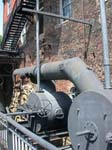
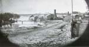
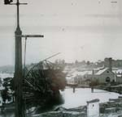
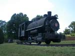

| page 2 of 6 |
| On to Richmond! 8/2/2001 |
UCLA at Gettysburg Journal |
| page 2 of 6 |
|  |
 |
 |
| Steam turbines were used to drive the machinery in the buildings at Tredegar. | Tredegar and the modern Richmond skyline. | Tredegar Iron Works, Alexander Gardner, April 1865. |
|  |
 |
|
| Tredegar Iron Works and Brown's Island, T. C. Roche, April 1865. | A small steam locomotive that was used at Tredegar after the turn of the century. | One more artsey "old and new" photograph... that's enough. |
 |
||
| Our next destination was Hollywood Cemetery. Here is the 90 foot granite memorial to Confederate dead, erected in 1869. The monument is surrounded by the graves of 18,000 Confederate soldiers. | The monument is assembled from rough hewn granite, and no mortar was used. A convict volunteered for the dangerous job of guiding the capstone into place. He was pardoned in appreciation for his work. | Some of the thousands of graves of Confederate soldiers in Hollywood. |